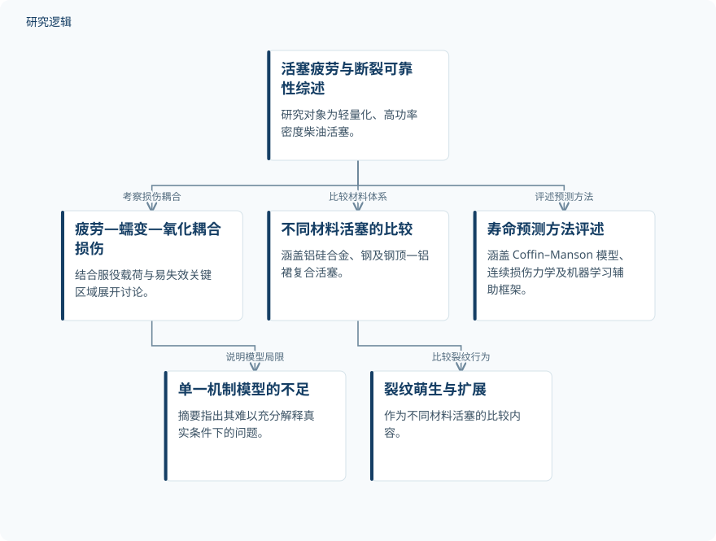

摘要解读
轻量化高功率密度柴油机活塞的热机械疲劳、裂纹演化与断裂可靠性综述
Thermo‐Mechanical Fatigue, Crack Evolution, and Fracture Reliability of Lightweight High‐Power‐Density Diesel Pistons: A Review
解读更新 2026-11-10 18:24 · 依据公开摘要整理，未核验全文细节
柴油活塞在提高功率密度、追求轻量化的同时，面临更严苛的热机械载荷。这篇综述围绕损伤耦合、裂纹演化与寿命预测展开，阅读价值在于理解：为什么活塞可靠性不能只靠单一损伤机制来解释。
文章目录
轻量化与高功率密度下的可靠性问题
更高功率密度和轻量化设计，对柴油活塞提出了严苛的热机械要求。本文是一篇综述，关注热机械疲劳、裂纹演化和断裂可靠性，而非报告某一种新活塞的性能试验。摘要将服役载荷、易失效关键区域与损伤机制共同纳入讨论，为理解活塞可靠性问题提供了相互关联的观察视角。
从损伤机制梳理到寿命预测方法评述
综述考察疲劳—蠕变—氧化耦合损伤，并比较铝硅合金、钢以及钢顶—铝裙复合活塞中的裂纹萌生与扩展。寿命预测部分覆盖经验性 Coffin–Manson 模型、连续损伤力学和机器学习辅助框架。此外，作者还讨论材料、结构设计、先进制造与热障涂层等缓解策略。摘要未交代文献检索、筛选和质量评价流程，因此这里仅概括其明确列出的评述范围。
依据摘要整理的综述内容关系示意


展示摘要明确涉及的损伤分析、材料比较与寿命预测关系，不代表论文原图或实验流程。
下载 SVG图示关系说明
实线表示相邻阶段的信息流，虚线表示跨阶段联系或反馈。
活塞疲劳与断裂可靠性综述 → 疲劳—蠕变—氧化耦合损伤：考察损伤耦合；疲劳—蠕变—氧化耦合损伤 → 单一机制模型的不足：说明模型局限；活塞疲劳与断裂可靠性综述 → 不同材料活塞的比较：比较材料体系；不同材料活塞的比较 → 裂纹萌生与扩展：比较裂纹行为；活塞疲劳与断裂可靠性综述 → 寿命预测方法评述：评述预测方法
单一机制不足，耦合损伤成为核心认识
摘要明确指出，单一机制模型在真实条件下存在不足，疲劳、蠕变与氧化的耦合作用是综述的重要议题。不过，摘要没有给出不同材料的裂纹行为排序，也没有报告各类预测模型的误差或缓解策略的定量收益。多尺度原位表征、物理信息驱动的数据预测、智能材料设计与实时健康监测，被作者列为关键研究需求，不能将其理解为本文已经实现并验证的能力。
摘要尚不能回答材料优劣与预测可信度
仅凭当前摘要，无法判断纳入研究的文献数量、试样或活塞样本规模、载荷条件及材料状态，也无法确认材料比较是否采用一致条件。对于寿命预测，还不能判断训练与验证数据的范围、独立验证情况，以及模型对不同工况的适用边界。这些属于摘要未报告的信息，不意味着论文没有讨论或相关研究没有开展。
阅读启发：先问预测依据，再看智能化用途
阅读启发：进一步阅读时，可重点追问机器学习辅助框架如何表达疲劳—蠕变—氧化耦合，以及其预测结论依赖哪些材料和服役条件。对智能运维方向，更值得辨明实时健康监测在综述中属于研究需求还是已有证据支持的应用；对结构设计方向，则可关注缓解策略与裂纹演化、寿命评价之间的联系，而不预设智能化方法必然带来可靠性提升。
以上为本站阅读启发与建议，不是论文已验证的结论。